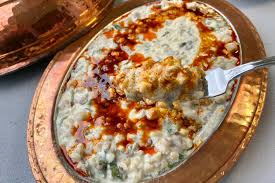
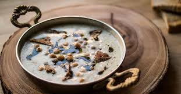

- Adana Kebap
 Tipik bir servis Adana kebabı porsiyonu; kömürde pişmiş etin yanında közlenmiş domates ve biber, mevsim salata, nane-maydanoz-süs biberi-limon tabağı, soğan salatası ve ezme ile gelir. Yöresel bir içecek olan şalgam suyu, ayran veya rakı ile tüketilir. Adana'ya özgü olsa da tüm Türkiye'de kebapçıların menülerinde yer alır.
Tipik bir servis Adana kebabı porsiyonu; kömürde pişmiş etin yanında közlenmiş domates ve biber, mevsim salata, nane-maydanoz-süs biberi-limon tabağı, soğan salatası ve ezme ile gelir. Yöresel bir içecek olan şalgam suyu, ayran veya rakı ile tüketilir. Adana'ya özgü olsa da tüm Türkiye'de kebapçıların menülerinde yer alır.
- Keledoş
 Nohut ve döğme bir tencerede haşlanmaya bırakılır. Pişmesine yakın yeşil mercimek konur, hepsi piştikten sonra içine akpancar ve kavurma eti konur. 10-15 dakika kaynatılır. Malzeme iyice pişer, ezilmiş kurut kaynayan tencereye dökülür muhallebi kıvamına gelinceye kadar pişirilir. Ocaktan indirilir, üzerine tereyağı konulur bu yağ yemeğin sıcağı ile erir daha sonra servis yapılır.
- Yağlama
 Nohut ve döğme bir tencerede haşlanmaya bırakılır. Pişmesine yakın yeşil mercimek konur, hepsi piştikten sonra içine akpancar ve kavurma eti konur. 10-15 dakika kaynatılır. Malzeme iyice pişer, ezilmiş kurut kaynayan tencereye dökülür muhallebi kıvamına gelinceye kadar pişirilir. Ocaktan indirilir, üzerine tereyağı konulur bu yağ yemeğin sıcağı ile erir daha sonra servis yapılır.
Nohut ve döğme bir tencerede haşlanmaya bırakılır. Pişmesine yakın yeşil mercimek konur, hepsi piştikten sonra içine akpancar ve kavurma eti konur. 10-15 dakika kaynatılır. Malzeme iyice pişer, ezilmiş kurut kaynayan tencereye dökülür muhallebi kıvamına gelinceye kadar pişirilir. Ocaktan indirilir, üzerine tereyağı konulur bu yağ yemeğin sıcağı ile erir daha sonra servis yapılır.
- Etli Ekmek
 Çapraz bıçaklarla kıyma şeklinde kesilmiş tercihe göre kuzu veya dana eti ve her biri ince doğranmış soğan, domates ve biberden oluşan karışım uzunlamasına açılmış ince hamurun üzerine yayılır. Karışımlı hamur, 90 cm (35 in) kadar elde sündürülür ve fırına sürülüp çift yönlü pişirilir.
Çapraz bıçaklarla kıyma şeklinde kesilmiş tercihe göre kuzu veya dana eti ve her biri ince doğranmış soğan, domates ve biberden oluşan karışım uzunlamasına açılmış ince hamurun üzerine yayılır. Karışımlı hamur, 90 cm (35 in) kadar elde sündürülür ve fırına sürülüp çift yönlü pişirilir.
- Kaburga Pilavı
 Öncelikle kaburgayı teflon tavada hafif yağlayarak onunu arkasını 10 dakika kadar pişiriyoruz. Sonrasında pirinci ve garnitürü, tuzu, karabiberi karıştırıp fırın tepsimize koyuyoruz. Fırın tepsisi küçük olursa daha iyi olur. Kaburganın önünü, arkasını salçayı hafif sulandırıp (içine biraz tuzda atalım) fırçayla her tarafına sürüyoruz ve pilavın üzerine yerleştiriyoruz. En son 2, 5 su bardağı suyun içine 1 adet domatesi rendeleyip 1 kaşık domates salçasıyla karıştırıyoruz ve borcamın üzerine döküyoruz. En son pilavın üzerine küçük parçalara böldüğümüz 1 kaşık kadar tereyağı koyuyoruz. Fırında kızarana kadar pişiriyoruz. Afiyet olsun.
Öncelikle kaburgayı teflon tavada hafif yağlayarak onunu arkasını 10 dakika kadar pişiriyoruz. Sonrasında pirinci ve garnitürü, tuzu, karabiberi karıştırıp fırın tepsimize koyuyoruz. Fırın tepsisi küçük olursa daha iyi olur. Kaburganın önünü, arkasını salçayı hafif sulandırıp (içine biraz tuzda atalım) fırçayla her tarafına sürüyoruz ve pilavın üzerine yerleştiriyoruz. En son 2, 5 su bardağı suyun içine 1 adet domatesi rendeleyip 1 kaşık domates salçasıyla karıştırıyoruz ve borcamın üzerine döküyoruz. En son pilavın üzerine küçük parçalara böldüğümüz 1 kaşık kadar tereyağı koyuyoruz. Fırında kızarana kadar pişiriyoruz. Afiyet olsun.
- Yuvalama
 Yuvalama veya Yuvarlama, Gaziantep mutfağına ait sulu ve kıvam olarak çorbaya yakın bir yemektir. Gaziantep'te bayram yemeği olarak imece usulü yapılmaktadır. Ramazan Bayramının geleneksel bayram yemeğidir. Antep Yuvarlaması / Antep Yuvalaması 13.01.2017 tarihinde Türk Patent ve Marka Kurumu tarafından tescillenmiş ve coğrafi işaret almıştır.